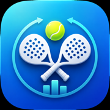

Privacy Policy
Padel tournament counter
Last updated: June 8, 2026
Padel tournament counter does not collect, sell, rent, or share personal data.
Overview
Padel tournament counter is an offline-first iOS app for organizing padel Americano-style tournaments. The app lets organizers create tournaments, add player names, generate schedules, enter match scores, calculate leaderboards, and export results.
Data Collection
We do not collect personal data from this app. The app does not include user accounts, analytics, advertising SDKs, tracking SDKs, cloud sync, or remote databases.
Data Stored On Your Device
Tournament information that you enter, such as tournament names, club or location names, player names, schedules, scores, and leaderboard results, is stored locally on your device. This information is used only to run the tournament inside the app.
Exports And Sharing
The app can export tournament files, images, PDFs, or summaries when you choose to share them. Sharing is initiated by you through iOS sharing features. We do not receive or store exported files.
Third-Party Services
The app may be distributed through Apple services such as the App Store and TestFlight. Apple may process information according to Apple's own privacy policy. Padel tournament counter does not add third-party analytics or advertising services.
Children's Privacy
The app does not knowingly collect data from children or from any other users.
Changes To This Policy
If the app's data practices change, this privacy policy will be updated before those changes are released.
Contact
For questions about this privacy policy, visit the Support page.